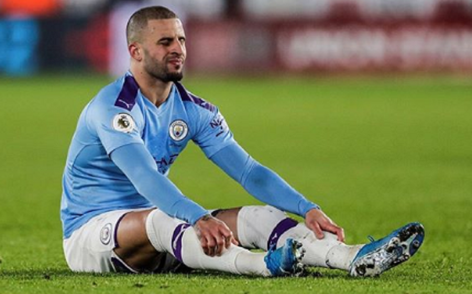

City investiga jogador que teria feito festa sexual durante quarentena
Titular de um dos maiores clube ingleses fura a quarentena para fazer festa.

Tal como acontece com a maioria dos clubes dos principais campeonatos europeus, também o Manchester City deu ordem aos jogadores para ficarem em casa, em isolamento social.
Esta indicação foi quebrada por Kyle Walker, que será agora alvo de um processo disciplinar por parte do clube no qual joga o português Bernardo Silva. De acordo com relatos da imprensa britânica, o jogador inglês, de 29 Anos, não cumpriu as regras, tendo participado numa festa com prostitutas.